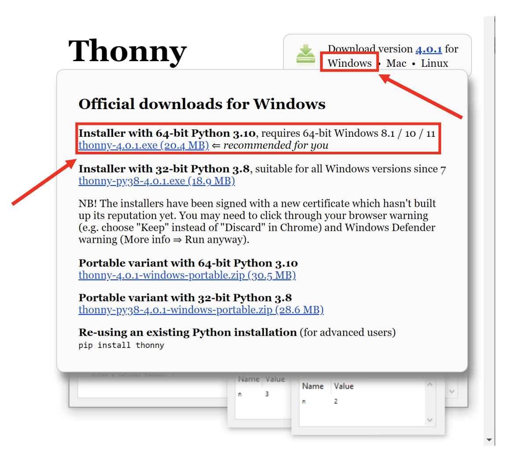
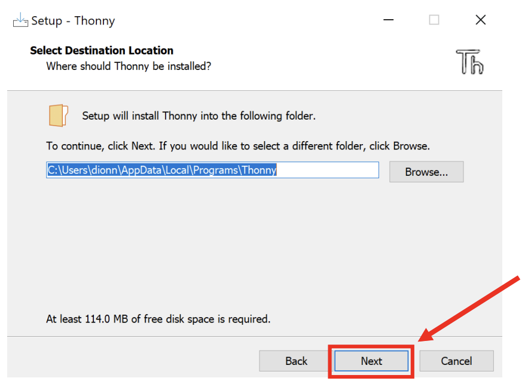
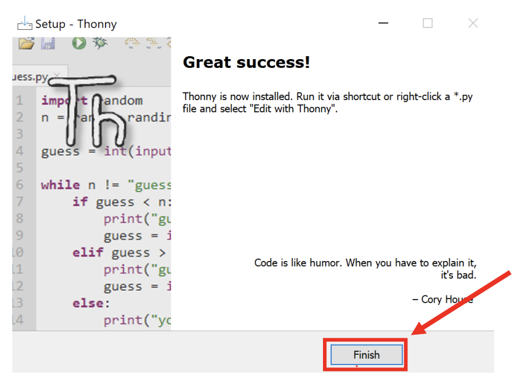
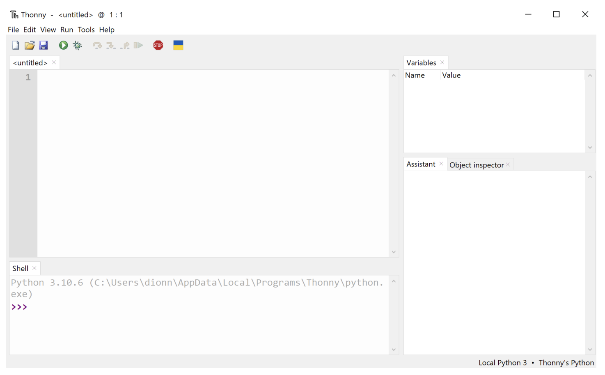

Thonny Installation Guide for Windows
Referencing the content in this webpage:
Bulusu, Kartik V. (2025, October 17). Introduction to Mechanical and Aerospace Engineering [Course lecture notes, codes and presentations]. Department of Mechanical and Aerospace Engineering, The George Washington University.
Introduction
This guide provides a step-by-step walkthrough for installing Thonny, a user-friendly Python IDE, on your Windows computer. Thonny simplifies Python programming and is suitable for learners and developers.
Prerequisites
Before you begin, ensure you have the following:
- A Windows computer.
- An active internet connection.
- Adequate disk space for the installation.
Installation Steps
1. Visit Thonny’s Official Website
Go to https://www.thonny.org/ to access Thonny’s official download page.

2. Select the Windows Download Option
Hover your mouse over the “Windows” option in the “Download version…” box and click to initiate the download.

3. Execute the Installer
Locate the downloaded file, typically in your “Downloads” folder. Double-click the Thonny installer to run it.

4. Confirm Installation
Click “Next” to proceed with the installation.

5. Agree to License Agreements
Accept the license agreements by clicking “Agree.”

6. Choose Installation Location
Select a location for installation; the default option is acceptable.

7. Select Start Menu Folder
Choose a start menu folder; the default option is acceptable.

8. Create Desktop Icon
Opt to create a desktop icon for easy access. Click “Create Desktop Icon”.

9. Initiate Installation
Click “Install” to start the installation process.

10. Completion
Once the installation is complete, click “Finish.”

11. Optional Cleanup
Consider moving the installer file to the Recycle bin if desired.
12. Launch Thonny
Thonny is now installed on your computer. Open the Thonny editor by clicking on the desktop icon. 
13. Verification
Confirm the successful installation by viewing the Thonny screen window.

Conclusion
Congratulations! Thonny is successfully installed on your Windows computer.
Start coding with Thonny, and if you need more guidance, consult the official documentation at https://github.com/thonny/thonny/wiki.
If you encounter any issues or have questions, feel free to seek assistance from the Thonny community or refer to the documentation for troubleshooting tips.